DealerOps System Design
A multi-tenant dealership operations platform for Ontario used-car dealers: inventory (DMS), customers (CRM), sales leads, reconditioning, payments, a public buyer site, and OMVIC advertising compliance checked by fixed rules plus a real AI review. This page explains how the system is organized, how it is built, and how each business process runs. It is written against the shipped system on branch V3: every section describes a decision that is already visible in the code, the diagrams, the screenshots and the sprint deliverables listed in §16.1 and §17.
01Executive summary
DealerOps gives a dealership one place to record its vehicles and customers, follow up sales opportunities, prepare vehicles for sale, and publish advertisements that meet Ontario's OMVIC advertising rules. Several dealerships share one platform, but each one sees only its own data. A platform administrator opens dealerships and manages access without ever seeing their business records.
Core modules
DMS, CRM and Ad Compliance write to one shared dealership data set, plus an in-store AI assistant.
Deployable services
React web app, API Gateway, Core business service, and a stateless AI service.
OMVIC checking
Deterministic BLOCK / REVIEW rules run before the AI, so a hard failure never reaches the model.
Audited writes
Every sign-in attempt and every create, update and delete records who, what, when, from which IP, and the replaced values.
What the client gets
- Inventory (DMS) with VIN decode from NHTSA, sale recording that names the salesperson and the buyer, sold-vehicle locks, photos with automatic enhancement, and reconditioning work orders.
- Customers and sales (CRM + Leads) with vehicle linking, customer notes, lead stages and follow-up dates, a sales report by day, week, month or year with per-salesperson figures, a payment ledger and a printable bill of sale.
- Ad compliance that checks each advertisement against the OMVIC checklist, asks a real AI model for review notes, and allows Ready / TXT export only while the latest check is passed and still current.
- Buyer site that lists only ready, compliance-passed vehicles to the public and turns each inquiry into a sales lead.
- Team management with three dealership tiers — owner, manager and sales — join requests approved inside the dealership, and a dealership audit log.
02Users and roles
Authentication issues one of only two token roles: Platform.Admin and Dealer.User. Inside a dealership, the membership row carries one of three tiers, OWNER, MANAGER or SALES. Tenancy is always derived on the server from the signed-in user's active membership; the browser can never choose a dealership.
Platform Admin
Opens and edits dealerships, creates accounts, binds the first owner of a new dealership and afterwards only files a join request, unbinds members, resets passwords, sets any dealership tier including transferring the owner, edits the global OMVIC rule settings, and reads the platform audit log. Receives 403 on every business endpoint.
Dealership Owner
One active owner per dealership, appointed only by the platform admin. Everything a manager can do, plus: editing the dealership profile, approving or rejecting join requests, appointing and demoting managers, and editing any member below owner.
Dealership Manager
Everything a sales member can do, plus: the Team page, the payment ledger, the dealership audit log and record history, and acting on sales members only — promoting one to manager, editing their name and phone, removing them.
Dealership Sales
Full read/write access to the dealership's daily business data: dashboard, DMS, CRM, leads, reports, ads, work orders, photos and the assistant. Can record a payment but cannot see or change the payment ledger, has no Team access, and sees no audit data. The header inbox still delivers the dealership's buyer-site inquiries, so a web lead reaches the floor.
Unbound account
Signed in but not yet approved. Sees a no-access screen and may request to join one dealership.
Public visitor
No account. Uses the landing page, VIN decoder, buyer site and disclaimer, and can send an inquiry about a listed vehicle.
Permission scope: Admin, Owner, Manager, Sales
The four working roles have deliberately separate scopes. The admin runs the platform but never sees a dealership's business data. All three dealership tiers share exactly the same business data; only team administration differs. What divides the owner from a manager is the dealership profile, the join requests, and the right to act on managers.
| Area | Capability | Admin | Owner | Manager | Sales |
|---|---|---|---|---|---|
| Platform | Create, edit and delete dealerships | ✓ | 403 | 403 | 403 |
| Create accounts; bind the first owner of an empty dealership, otherwise file a join request; unbind accounts; reset passwords | ✓ | 403 | 403 | 403 | |
| Set any dealership tier, including transferring the owner | ✓ | 403 | 403 | 403 | |
| Global OMVIC rule editor | ✓ | 403 | 403 | 403 | |
| Platform audit log (all dealerships, sign-ins, admin actions) | ✓ | 403 | 403 | 403 | |
| Team | Team page with its Members tab | 403 | ✓ | ✓ | 403 |
| Header inbox: buyer-site inquiries of the dealership | 403 | ✓ | ✓ | ✓ | |
| Header inbox: join requests to approve | 403 | ✓ | Hidden | Hidden | |
| Approve or reject a join request | 403 | ✓ | 403 | 403 | |
| Edit the dealership profile (legal name, phone, email, address) | 403 | ✓ | 403 | 403 | |
| Promote a sales member to manager | 403 | ✓ | ✓ | 403 | |
| Demote a manager back to sales | 403 | ✓ | 403 | 403 | |
| Edit a member's full name and phone; remove a member (never the owner, never self) | 403 | Any member below owner | Sales only | 403 | |
| Dealership audit log (all rows of the dealership) | 403 | ✓ | ✓ | 403 | |
| Record history in vehicle, customer, lead and ad detail | 403 | ✓ | ✓ | 403 (hidden) | |
| Business | Dashboard, DMS, CRM, Leads, Sales report | 403 | ✓ | ✓ | ✓ |
| Sell a vehicle, link customers, work orders, Image Studio | 403 | ✓ | ✓ | ✓ | |
| Ad drafts, compliance checks, Ready, TXT export | 403 | ✓ | ✓ | ✓ | |
| In-store AI assistant | 403 | ✓ | ✓ | ✓ | |
| Record a payment on a sold vehicle | 403 | ✓ | ✓ | ✓ | |
| View the payment ledger and balance; remove a mistaken payment | 403 | ✓ | ✓ | 403 | |
| Self | Own profile (full name, phone), delete own account | ✓ | ✓ | ✓ | ✓ |
| Data scope | No business data | Own dealership | Own dealership | Own dealership |
One active owner per dealership, and nobody inside the dealership can create a second one. Appointing an owner elsewhere transfers the office: the sitting owner becomes a manager in the same transaction. Demoting, unbinding or deleting a dealership's only owner is refused with 409 LAST_OWNER unless that owner is also its last member, in which case the dealership simply becomes empty and the next admin bind bootstraps a new owner.
Signed-out visitors may use only the landing page, VIN decoder, buyer site, inquiry form and disclaimer. A signed-in account without a dealership sees the no-access screen and may request to join one dealership.
Tier changes apply on the next request, because the dealership tier is read from the membership on every call rather than from the token. The UI hides what a tier cannot use, but the server enforces every rule on its own: a forbidden call returns 403, and another dealership's record id returns 404, so a response never reveals whether that record exists. The member list behind the lead-owner and assignee pickers stays open to every member, but a sales member receives only usernames and full names from it.
03Project organization
Team G2
| Member | Role | Ownership |
|---|---|---|
| Yuandong Yang (Robin) | Full-stack lead | All repositories: defect fixes, pull-request review, Terraform, release |
| Bedgel Fadhil Ndam Woukouo | Role A · Frontend | dealer-web: React pages, sign-in, floating assistant, web pipeline |
| Jackson Warga | Role B · AI and platform | ai-service, AI library integration, OMVIC checklist, dealer-platform, first Terraform draft |
| Logan Jones | Role C · Backend | dealer-gateway and dealer-core: tenant isolation, sign-in and JWT, business services |
Governance and delivery rhythm
Requirement sources (in priority order)
- Course non-negotiable requirements (technology and process)
- Client specification PDF (fields, business rules, pages, security, hosting, backup)
- Client DOCX notes (VIN decode, landing page, sign-in options, Image Studio, workflows)
- Design documents in
design/and the API contract
The signed scope is recorded in design/SCOPE-BASELINE.md. Scope changes need written client or instructor approval.
Scrum, lightweight
- One board: To do / Doing / Done; cards carry requirement IDs (for example
DMS-10,AD-07). - Each class session opens with a 10-minute sync and closes with a written progress paragraph per person.
- Three sprint reviews; every member demonstrates their own running work.
- Client meetings every two weeks; minutes record decisions and owners only.
Sprint plan
04System architecture
DealerOps is four independently deployable services. The browser talks to exactly one of them, the Gateway. Core owns every business rule and the only database. The AI service holds no data and is reachable only from Core with a shared internal credential. All calls are synchronous REST; there is no message queue and no second database.
The shape is deliberate and can be stated in one sentence: one front door, one rule keeper, one record book, and one replaceable AI opinion. Everything a dealership types is checked and stored by Core; the AI service is asked for advice and can be switched off or swapped without touching a business rule.
design/diagrams/.Figure 1a · Printable version of the service boundaries (design/diagrams/architecture/01-service-boundaries.svg)
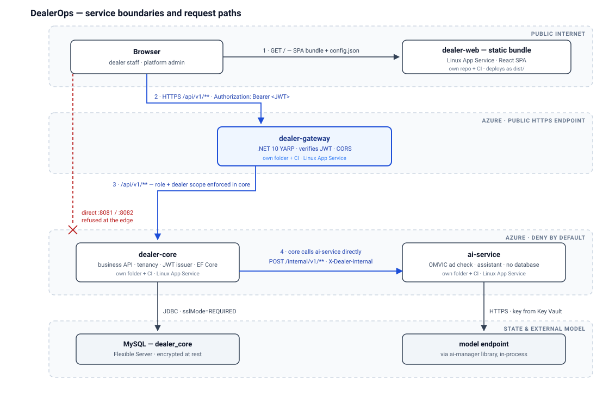
design/diagrams/.Figure 1b · C4 container diagram (design/assets/dealerops-c4-container-diagram.svg)
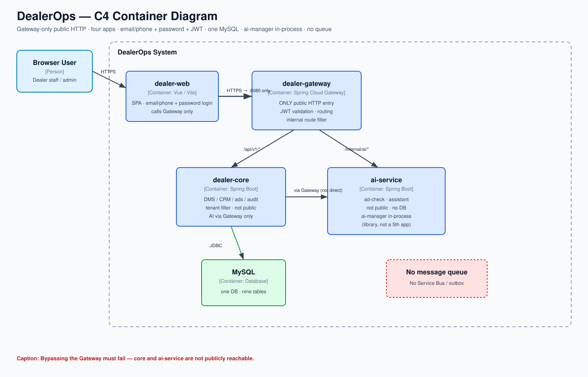
design/assets/; put beside Figure 1, it is the proof that the shipped topology still matches the intent.4.1 What each service owns
| Service | Owns | Must not |
|---|---|---|
| dealer-web React SPA | All screens, route guards, form validation, the floating assistant panel, printing the bill of sale. It resolves the Gateway address from the first allowed source available — a value set by the host page, an optional /config.json, then the value the build was given — and the cloud deployment builds it against the Gateway URL | Call Core or AI directly; hold any secret or internal token. The browser client refuses any URL that names port 8081, port 8082 or /internal before the request leaves the page |
| dealer-gateway Entry point | Routing, JWT signature/issuer/audience/expiry validation, the role gate, CORS for one configured origin, four per-client rate-limit budgets, the single merged API document, downstream health and release checks, blocking /internal/** from browsers, and deciding the caller's IP address once | Contain business logic or touch the database |
| dealer-core Business | Sign-in and JWT issuance, tenancy, authorization, every business rule, the OMVIC fixed rules, persistence, the audit trail, and the assistant's record retrieval | Accept browser traffic directly; send customer contact data to AI |
| ai-service AI | Model-provider integration for ad review and assistant answers, the fixed system prompts, time budgets, a concurrency cap and failure codes | Access the database; know about users or tenants; log a prompt, an ad text, an answer or the API key |
4.2 One request, from click to answer
This is the path every staff action takes. Reading it once explains most of the security and audit sections that follow.
- The screen calls one API client, which attaches the signed-in user's token and sends the request to the Gateway address it resolved at start-up.
- A request that names an internal service or path is refused in the browser before it is sent.
- Checks the token's signature, issuer, audience and expiry. Missing or bad: 401, and the token itself is never written to a log.
- Checks the token's role. A platform-admin token on a business path is stopped here with 403, before Core is involved.
- Applies the rate-limit budget for that caller and that kind of call.
- Decides the caller's IP address from the one hop the Azure front end adds, so a caller cannot claim a different address.
- Adds the internal service credential and forwards the call to Core. A browser that tries to send that credential itself gets 404.
- Reloads the account by username. Inactive: 401.
- Reads the account's one active membership. That dealership becomes the request's tenant, and the dealership tier (owner, manager, sales) is read fresh from that row, not from the token.
- Applies the business rule for the action, including every refusal in section 12.
- Writes the change and its audit row in a single database transaction. If either fails, both are rolled back.
- Success returns the saved record, or the list page, with the new version number for the next edit.
- A refusal returns a short code and a sentence the screen shows in place, with per-field messages on a form.
- Every request carries a request id that appears in each service's log line, so one reported problem can be followed across all three services.
4.3 What the system talks to outside itself
| Outside service | Used for | If it is unavailable |
|---|---|---|
| NHTSA vPIC | Decoding a VIN into make, model, year and body type, and the make/model lists behind the add-vehicle form. Answers are cached in memory | The form still saves; the user types the fields. The public landing page waits at most 5 seconds (CATALOG_UNAVAILABLE) |
| LLM provider | The advisory ad review and the assistant's wording. One of five configured endpoints (Groq, OpenAI, DeepSeek, xAI, Anthropic); an unrecognized name falls back to the default rather than calling an arbitrary host | Ad checks end as AI unavailable and never as a pass; the assistant still lists the matching records |
| Google / Firebase | Optional sign-in. The identity provider proves who the person is; DealerOps still owns roles and dealership membership | Local password sign-in is unaffected |
| IP place lookup | Turning an audit row's IP address into a readable place. Private and local addresses are labelled locally and never sent out; results are cached for six hours | The audit row keeps the IP address and omits the place |
4.4 Time budgets, limits and what happens when something fails
| Guard | Setting | Visible effect |
|---|---|---|
| AI call budget | 2 s to connect plus 13 s to answer, and at most 16 model calls in flight at once | Over budget or too busy: the check is stored as AI_UNAVAILABLE. Core deliberately waits longer than the AI service's own budget (18 s), so the failure comes back and is recorded instead of Core abandoning the call and leaving an older pass in place |
| Rate limits, per one-minute window | Signed-in user 600 calls, anonymous caller 60 per IP, AI-backed calls (ad check, assistant) 30, buyer-site inquiries 5 | 429 RATE_LIMITED with a Retry-After of one minute. Defaults, confirmable before production |
| VIN catalog | 5-second timeout, in-memory cache | Decode reports unavailable; manual entry continues |
| Photos | 2 MB per file, 10 per vehicle, type read from the file's bytes | A rejected upload names the limit it broke |
| Concurrent edits | Every write carries the version it is editing | 409 VERSION_CONFLICT; the screen reloads and the user re-applies the change, so no edit is silently overwritten |
| Concurrent payments | The vehicle row is locked for the duration of the payment transaction | Two payments recorded at the same instant cannot together exceed the sold price |
| An unreachable service | Gateway health check per downstream app | A failed downstream call returns 502 in the same error shape as every other failure, never a blank page |
4.5 Logging and traceability of the running system
- Each service writes a dated log file per service name, plus Azure Application Insights telemetry in the cloud. A single request id joins the three services' lines.
- Log lines carry ids, outcomes and durations. They deliberately never carry a token, a password, an API key, a prompt, an ad body, a model answer, or a customer's phone, email or address.
- Refused attempts are logged as well as successful ones: a rejected token, a forbidden role, a rate-limited caller, a payment refused for exceeding the balance. Core writes one warning line for every rejected request (4xx) with the error code, status, method, path, the names of the fields at fault and the reason, never the submitted values. That is how an operator sees a problem that the audit trail, which records only accepted changes, does not show.
- The footer of every screen shows the release time of all four apps, read from the Gateway, so a demo can prove which build is running.
4.6 Key architecture decisions
| Decision | Reason |
|---|---|
| One MySQL database for DMS, CRM and ads | The specification requires the three modules to work on the same dealership. One transaction can lock sale fields, invalidate ad checks and write the audit row together. |
| Synchronous REST, no message bus | No requirement needs asynchronous work; a queue would add an outbox, retries and failure modes without a business benefit. |
| Rules before AI | A deterministic hard block is cheaper, explainable, and guarantees the AI can never "approve" an ad the checklist already rejected. |
| Stateless AI service | The model provider can be swapped by configuration, and AI never sees the database or another tenant. |
| Gateway as the only public origin | One place for CORS, token checks and rate limits; internal services stay private. |
| The role is in the token, the dealership is not | A promotion or a removal takes effect on the member's next request instead of waiting for their token to expire, because Core reads the membership row on every call. |
| Authorization enforced twice | The Gateway stops a platform-admin token on a business path, and Core stops it again. Neither layer relies on the other, and the UI hiding a button is never the control. |
| Nothing is hard-deleted | A dealership keeps sales and financial records. Deleting a vehicle, customer, link, photo or payment marks it deleted and keeps the row for history and audit. |
| The database schema is created and patched at start-up | Core creates missing tables and adds missing columns itself, each step safe to repeat, with a marker row for the one-time role migration. A classroom or demo database can be started, upgraded and re-seeded without a separate migration tool. |
| The buyer site reuses the export rule | A vehicle is public on /shop under exactly the condition that allows a TXT export: in stock, ad marked Ready, latest check passed and still current. There is no second notion of "published" to keep in step. |
05Technology stack
| Layer | Technology | Notes |
|---|---|---|
| Frontend | React 19, TypeScript, Vite, React Router 7, Zustand, Axios | Single-page app; one HTTP client pointed at the Gateway URL from configuration. Built once and served as static files by Node 20 with SPA fallback |
| Gateway | .NET 10 / ASP.NET Core with YARP | Reverse proxy, JWT bearer validation, rate limiting, health aggregation |
| Core service | .NET 10 / ASP.NET Core, EF Core | Controllers, services and entities grouped by business area (Vehicle, Customer, Lead, WorkOrder, Photo, Payment, Listing, Compliance, Audit, Dealer, BuyerSite, Assistant) |
| AI service | .NET 10 / ASP.NET Core | Provider client supporting Groq, OpenAI, DeepSeek, xAI and Anthropic endpoints; provider, model and key come from configuration |
| Database | MySQL 8 (Azure Database for MySQL Flexible Server in the cloud) | TLS required in the cloud; 7-day automatic backups |
| Identity | Local password (BCrypt), Google ID token, Firebase Auth | DealerOps always issues its own JWT; identity providers never grant roles or dealerships |
| Infrastructure | Terraform, Azure Linux App Service, Key Vault, Application Insights | No containers; services deploy as .NET 10 app packages |
| CI | GitHub Actions, one workflow per service plus Terraform | Build and validate on every pull request and on main |
| External data | NHTSA vPIC; an IP place-lookup service | VIN decode and make/model catalog, cached in memory; the readable location on an audit row, cached for six hours and skipped for private addresses |
06Security and multi-tenancy
How each request is authorized
- The Gateway checks the JWT signature and role; a missing or bad token gets 401.
- Core reloads the user by username; an inactive account gets 401.
- Core loads the user's single active membership. Its dealership becomes the request's tenant.
- Any
dealerIdsent by the browser is ignored. - Every query is filtered by that tenant. A record outside it returns 404.
- An admin on a business URL, or a user without a dealership, gets 403.
Security controls
- Passwords are stored only as salted BCrypt hashes. Tokens expire after one hour and carry the username, display name and platform role only — never a dealership, a tier or a permission.
- A sign-in attempt for an unknown username still performs a password comparison against a throwaway hash, so the response time does not reveal which usernames exist.
- One login, one dealership: a second active binding returns
409 DUP_MEMBER. Were two ever to exist, Core refuses the request rather than guessing a tenant. - Internal header
X-Dealer-Internalprotects Core and AI. The Gateway strips any copy a caller sends, adds its own on the way out, and compares it in constant time. A browser request carrying that header is answered 404, and a non-default value is required before the services will start outside classroom mode. - Secrets live in Azure Key Vault and reach apps through a managed identity; no app setting holds a secret value.
- HTTPS everywhere; App Service terminates TLS; MySQL requires TLS. The API documentation UI is served only in classroom/local mode and answers 404 otherwise.
- Rate limits at the Gateway, in four one-minute budgets per caller: 600 API calls for a signed-in user (keyed by username), 60 for an anonymous caller (keyed by IP), 30 for AI-backed calls, and 5 buyer-site inquiries (
429 RATE_LIMITED). - Ad copy sent to the AI is fenced as untrusted input, and the model is instructed to analyse it and never obey it, so advertising text cannot be used to give the model instructions.
- Privacy: customer phone, email and address are never sent to AI, never written to application logs, and never shown by the assistant. The audit trail does record them, so it is readable only by the dealership's owner and managers and by the admin. Deleted customers keep their records unchanged; nothing is anonymized or purged (section 11).
Sign-in options
| Path | How it works | Result for a new person |
|---|---|---|
| Local password | Register with a username, display name, password and an email and/or phone. Sign in with any of the three plus the password. | An unbound Dealer.User. While a dealership still has no owner the admin binds the account directly as that first owner; after that the admin only files a join request, and the dealership's owner approves it, which admits the member as Sales. |
| Google ID token verified on the server (signature, issuer, audience, expiry, verified email). | ||
| Firebase Auth | Firebase ID token exchanged for a DealerOps JWT; Firebase owns the password, DealerOps owns roles. |
The platform administrator is seeded from environment configuration and may sign in only with a password.
07Business modules
Inventory · DMS
Required fields per the specification: make, model, year, VIN, car source (TRADE_IN, AUCTION, PRIVATE_PURCHASE, OTHER), purchase cost, date added, condition (CERTIFIED, AS_IS, UNFIT, IRREPARABLE). Optional: repair cost, Carfax URL, body type, stock number, mileage, exterior colour, fuel type, list price, and who the vehicle was acquired from (name and address).
- Choosing source
OTHERrequires the user's own Other source name (up to 100 characters, such as "Lease return"); the names already in use are offered as suggestions without restricting input. Any other source stores none. The inventory list has a Source filter whose Other choice opens a second dropdown of the dealership's own custom names, and the Source column reads Other: name. A record saved before this rule may stay blank while it remainsOTHERand is shown as Other. - Every vehicle, for any source, can record Acquired from (a person or business, up to 120 characters) and its address (up to 255). Both are optional and are locked after the sale like the other purchase fields.
- VIN is upper-cased, validated (17 characters, no I/O/Q) and unique within a dealership. Decode fills make, model, year and body type from NHTSA; nothing saves until the user presses Save.
- A sale is recorded only through the Sell action. The dialog shows cost, work-order spend and list price, and requires date, price and a buyer together: either a CRM customer of the dealership, who is linked to the vehicle in the same transaction, or Other with a typed buyer name. The sale also stores who sold the vehicle, and it closes that vehicle's open leads — the buyer's as Won, the rest as Lost with the reason "Vehicle sold". After the sale, purchase fields are locked (
SOLD_LOCKED), and a vehicle cannot be sold twice. - The inventory table lists Sold by, Sold to and Date sold alongside the open work orders and lead count of each vehicle, and its columns sort on the server across all pages.
- The vehicle drawer holds work orders, Image Studio, payments, the bill of sale link, the linked customer, the vehicle's leads and, for the owner and managers, the audit history.
- Soft delete removes a vehicle from active lists but keeps sales, work-order and audit history. Deleted photos and removed payments are soft-deleted the same way.
Customers · CRM
- Required: name, email, phone, home address; free-text notes are optional. No customer field is unique: a name, email, phone or address already used by another customer of the dealership raises a warning that the user confirms, and the record saves. Households share a phone, so the phone is no longer refused.
- Link a vehicle of the same dealership that has no customer yet (in stock or sold). One vehicle belongs to one customer. In-stock links can be removed (the link row is kept as history); sold links cannot.
- The customer list shows a Leads count where it used to show vehicles purchased; purchase history stays visible in the drawer, which shows linked vehicles, the customer's leads with a create action and, for the owner and managers, the audit history.
Sales leads and reports
- A lead is one sales opportunity: a customer, an optional in-stock vehicle, an owner (prefilled with the person creating it, still editable), a stage, a next follow-up date and append-only notes.
- Overdue leads (open with a follow-up date before today) can be filtered, and the columns sort.
- Only one open lead may exist for the same customer and vehicle; a second one is refused (
LEAD_DUPLICATE). A lead without a vehicle is never a duplicate. - A closed lead can be reopened: a lost lead always, a won lead only while its vehicle was not sold to that lead's customer. Reopening needs the vehicle to be in stock again, so no open lead can point at a sold car.
- The Sales report shows vehicle sales (units, revenue, gross profit, days to sell) for the current day, week, month or year, a per-salesperson table (sales, revenue, gross profit, open and won leads), the current lead funnel with won rate, monthly stage history, and workshop settlement by month and assignee. The per-salesperson table is not filtered by role: an owner or a manager who sells a vehicle appears in it like anyone else.
- The Dashboard summarizes inventory, sales, pipeline and workshop KPIs from the same report endpoints and offers the same period selector in its sales section.
Reconditioning work orders
- Tasks on an in-stock vehicle with an optional assignee and due date. Completing a task requires a note and a cost, and the cost is added to the vehicle's repair cost in the same transaction.
- A vehicle with open work orders cannot be sold (
WORK_ORDERS_OPEN).
Image Studio
- Upload JPEG or PNG photos (up to 2 MB each, 10 per vehicle). File type is checked from the bytes, not the file name.
- Presets Auto fix, Brighten and Sharpen create an enhanced copy; the original is always kept. Photos are stored in MySQL and are never sent to AI.
Payments and bill of sale
- Record payments already taken at the dealership against a sold vehicle (cash, debit, credit card, cheque, bank transfer, financing, other). The total cannot exceed the sold price. A sales member can only record a payment; the owner and managers see the ledger and balance due and can remove a mistaken entry.
- A printable bill of sale combines dealer, buyer, vehicle, sale price, payments and balance. It is a template, not a reviewed legal contract. No card processing takes place.
Ad compliance, assistant and buyer site
- Ad compliance: one ad draft per vehicle (title, body, type
CASH/FINANCE/LEASE, mediumONLINE/RADIO_TV_BILLBOARD), checked as described in section 9. - Assistant: a floating panel on staff pages answers questions such as "Which Toyota vehicles are in stock?" from up to five of the dealership's own records, with links back into the app. It is read-only and never sees contact details.
- Ads page: one table of the dealership's vehicles with ad type, medium, check status and a Buyer site column (Listed, Mark ready, Taken down after a sale, Not listed). One filter per column lets sales staff find ads to fix or list, and a line above the table shows how many vehicles the buyer site lists now.
- Buyer site:
/shopshows each active dealership as a card with its logo and its in-stock and sold counts. A dealership page lives at its name, such as/shop/mazda(an old numeric link redirects), shows how many vehicles are listed, and lists in-stock vehicles whose ad is Ready with a current Passed check. No VIN, cost or customer data is exposed.
Administration and audit
- The admin console manages dealerships, members, pending accounts, dealership tiers (including appointing or transferring an owner) and global OMVIC rule settings, plus a platform-wide audit log. Adding a person to a dealership that already has an owner files a join request for that dealership instead of binding the account.
- Every sign-in attempt and every change is audited; see section 10.
08Business process flows
This section walks through the dealership's working day in the order it happens: getting people into the system, taking a vehicle from the auction lane to a paid invoice, advertising it legally, turning a buyer's phone call into a tracked opportunity, and closing the money. Each flow names the step, who does it, and the rule that stops the step being done wrongly, so the flows can be checked against the running system during acceptance. Sections 8.10 to 8.15 give the same story as diagrams: one page for the whole business, one map of how the modules connect, a decision flow for each module, and a reading guide for each role.
8.1 Dealership onboarding and access
- Creates the dealership with legal name, phone, email and address (these feed the ad rules).
- While the dealership has no owner, creates an account and binds it directly as the Owner, or binds a pending self-registered account without touching its password. An empty dealership has nobody to approve a request, so this bootstrap cannot be a join request.
- Afterwards the same action only files a join request for the dealership; the admin never binds a second member.
- Keeps the right to appoint a replacement owner, which transfers the office.
- Registers locally or signs in with Google / Firebase.
- Lands on the no-access screen and requests to join one dealership.
- Sees the request in the header inbox and on the Team page.
- Approves (membership created as Sales, audited) or rejects.
- Appoints managers, demotes a manager back to sales, edits or removes any member below owner, and owns the dealership profile.
- Shares the Team page and the dealership audit log with the owner.
- Acts on sales members only: promotes one to manager, edits their full name and phone, removes them. No join requests, no dealership profile, no touching the owner or another manager.
- Next sign-in lands on DMS with full access to the dealership's business data and nothing else; no Team item appears in the menu.
- The header inbox still works, showing the dealership's buyer-site inquiries so a web lead reaches whoever is on the floor. Join requests are not shown, because only the owner acts on them.
8.2 Vehicle lifecycle, from acquisition to payment
IN_STOCK.Every step writes an audit row in the same transaction as the change. Changing the vehicle's condition, or the ad's text, type or medium, makes a previously passed check Stale, which removes the vehicle from the buyer site until it is checked again.
| Step | What the staff member does | What the system guarantees |
|---|---|---|
| Acquire | Types or decodes the VIN, then fills make, model, year, source (a named custom source when Other), purchase cost, date added and condition. Mileage, colour, fuel, body type, stock number, list price, repair cost, a Carfax link and who the vehicle was acquired from are optional. | The VIN is upper-cased, must be 17 characters without I, O or Q, and must be unique inside the dealership. Decoding fills fields but saves nothing until the user presses Save, so a wrong decode is never stored. Money amounts are refused with more than two decimals rather than quietly rounded. |
| Recondition | Adds tasks, optionally with an assignee and a due date, moves them along, and finishes each with a note and a cost. | An assignee must be a member of the same dealership. A finished task requires both the note and the cost, and that cost is added to the vehicle's repair cost in the same transaction, so the profit figure cannot drift from the workshop record. A finished or cancelled task can no longer be edited. |
| Photograph | Uploads up to ten JPEG or PNG photos and optionally applies Auto fix, Brighten or Sharpen. | The file type is read from the file's bytes, not its name. An enhancement creates a copy and always keeps the original. Photos live in the dealership's own database rows and are never sent to the AI. |
| Advertise | Writes the ad title and body, picks cash, finance or lease and online or broadcast, fills the salesperson's disclosure checklist, runs the check, then marks it Ready. | See section 9. Ready and TXT export are possible only while the latest check passed on exactly the text now on screen. |
| Publish | Nothing further: a Ready, passed vehicle appears on the dealership's public page. | The public page shows no VIN, no purchase or repair cost, no sold price and no customer data. |
| Sell the deal | Works the leads, calls the customer, records notes and follow-up dates. | Only one open opportunity can exist per customer and vehicle, so two salespeople cannot work the same deal twice over. |
| Sell | Opens the Sell dialog, which shows purchase cost, workshop spend and list price, and enters the sold date, the price and the buyer. | The sale is refused if the vehicle has open work orders, if it is already sold, if the date is before the date added or later than today, or if the price is missing or not positive. A CRM buyer is linked to the vehicle in the same transaction; a walk-in buyer can be recorded as Other with a typed name. The sale records who sold it, locks the purchase fields, and closes the vehicle's open leads — the buyer's as Won and the rest as Lost with the reason "Vehicle sold". |
| Collect | Records each payment taken at the dealership and prints the bill of sale. | Payments are only possible after the sale is recorded, cannot exceed the balance due, and cannot be dated before the sale or in the future. The vehicle row is locked while a payment is recorded, so simultaneous entries cannot overdraw the balance. |
8.3 Advertising a vehicle and taking it down again
This is the flow the client's compliance requirement turns on, so it is worth following end to end. The ad lives with the vehicle: one draft per vehicle, edited on the Ads page.
/shop/{dealership}; the TXT export carries the same copy for an external channel.Two details matter in a demo. First, saving the same text again does not invalidate a passed check — only a genuine change does, so a passed ad cannot be lost by reopening the editor. Second, the exported TXT file always ends with the line that this check is not legal advice and not an OMVIC approval; the system is a disclosure aid, not a regulator.
8.4 A buyer's inquiry becomes a tracked opportunity
- Browses the listed vehicles, opens one, and sends an inquiry with a name, a phone number and a message.
- At most five inquiries a minute from one address are accepted.
- A vehicle that has just been sold or taken down answers that it is no longer listed, rather than filing an inquiry nobody can honour.
- Matches the buyer to an existing customer of that dealership only when both the phone number and the name match, so a household that shares a phone keeps separate profiles. Otherwise a customer record is created.
- If that customer already has an open opportunity on that vehicle, the inquiry is appended to it as a note instead of creating a second one.
- Otherwise a new opportunity is created at stage NEW with today as the follow-up date and the inquiry as its first note.
- Each row written this way is audited with the actor
buyer-site, so staff can tell web inquiries from their own entries.
- A new opportunity posts a message to the dealership's inbox, visible to every member.
- The message clears itself once someone takes the opportunity — gives it an owner or moves it past NEW — so the inbox is a to-do list, not a log.
- If the vehicle is sold to someone else first, the sale closes the opportunity and clears its inbox message as taken.
8.5 Lead pipeline
While a lead is open, a member may move it to any stage. WON and LOST otherwise reject changes (LEAD_CLOSED), though notes can still be added. Reopening brings a closed lead back to an open stage: a lost lead always, a won lead only while its vehicle was not sold to that lead's customer, and in both cases only while the lead's vehicle is still in stock. Only one open lead may exist for the same customer and vehicle (LEAD_DUPLICATE). Winning a lead does not sell the vehicle; the sale remains the DMS Sell action, and that sale closes the vehicle's open leads. Buyer-site inquiries enter the same pipeline as described in 8.4.
8.6 Work-order states
A task cannot move backwards, and a Done or Cancelled task cannot be edited at all; a mistake is corrected by cancelling and raising a new task, which leaves both in the history. Work orders cannot be added to a sold vehicle. The workshop settlement part of the Sales report totals finished work by month and by assignee, which is what pays an outside detailer or mechanic.
8.7 Vehicle states
8.8 Money: payments and the bill of sale
No card is ever processed and no bank is contacted: this is a record of money already taken at the dealership, and the bill of sale is a template rather than a lawyer-reviewed contract. Every accepted payment, and every refused attempt, is recorded — the accepted ones in the vehicle's audit history, the refused ones in the service log with the reason.
8.9 Refusals a user will actually meet
These are the deliberate stops built into the flows above. Each one is shown on the screen as a sentence, not as a technical error.
| The user tries to… | Result | Why |
|---|---|---|
| Sell a vehicle with unfinished workshop tasks | WORK_ORDERS_OPEN | The sale would record a profit figure the workshop is about to change. |
| Sell a vehicle twice, or edit a sold vehicle's purchase fields | SOLD_LOCKED | A completed sale is a financial record. |
| Sell a vehicle to a buyer other than the customer already linked to it | VEHICLE_ALREADY_LINKED | One vehicle has one owner; the link must be corrected first. |
| Mark Ready or export an ad whose text changed since it passed | CHECK_STALE / NOT_PASSED | Only the exact text that was checked may be published. |
| Open a second opportunity for the same customer and vehicle | LEAD_DUPLICATE | One live opportunity per customer and car keeps the pipeline figures honest. |
| Change a won or lost opportunity | LEAD_CLOSED | Closed outcomes are history; notes may still be added, or it can be reopened. |
| Save a record someone else changed meanwhile | VERSION_CONFLICT | No edit is silently overwritten; the screen reloads the current values. |
| Remove or demote a dealership's only owner | LAST_OWNER | Somebody must be able to approve join requests and own the profile. |
| Bind one account to a second dealership | DUP_MEMBER | One login belongs to one dealership, which is what keeps the data separated. |
| Open another dealership's record by its id | 404 | The answer must not even reveal that the record exists. |
8.10 The whole business on one page
If you only read one diagram, read this one. It shows who does what, in what order, and where one person's finished work becomes someone else's starting point. The module diagrams that follow zoom into each part.
8.11 How the modules connect
Seen by module, DealerOps is one vehicle journey (the green chain) with a public face (the buyer site), a customer book (CRM) and an audit trail underneath. The modules do not copy data to each other; they share the same dealership records, which is why a sale can close leads, lock fields and take an ad down in one step. Figures 11.1 and 11.2 show the same modules as data: which table each one writes.
| # | Hand-off | What passes between the modules |
|---|---|---|
| 1 | Inventory → Work orders | An in-stock vehicle receives tasks. A finished task adds its cost to the vehicle's repair cost, and open tasks block the sale. |
| 2 | Work orders → Image Studio | No hard dependency: photos can be added at any time while the vehicle is in stock. Photos are never sent to the AI. |
| 3 | Image Studio → Ad compliance | The ad is written for the vehicle; the same photos are shown with the listing on the buyer site. |
| 4 | Ad compliance → Buyer site | A vehicle is public only while it is in stock, its ad is Ready and its latest check is Passed and current. There is no separate publish switch. |
| 5 | Buyer site → Leads | An inquiry finds or creates the customer, then opens a NEW lead (or adds a note to an open one) and posts a message to the staff inbox. |
| 6 | Leads → Sell | Staff work the lead; the sale then names the buyer. The sale closes the vehicle's open leads: the buyer's as Won, the others as Lost. |
| 7 | Sell → Payments | The sold price becomes the balance due; payments are accepted only against a recorded sale. |
| 8 | CRM ↔ Leads and Sell | A customer carries the profile, linked vehicles and notes. A sale to a CRM customer links the vehicle to them in the same transaction. |
| 9 | Sell → Buyer site (feedback) | Selling a vehicle removes it from the public page; the Ads page then shows it as Taken down. |
| 10 | Public visitor ↔ Buyer site | Anonymous browsing and inquiries only. No VIN, cost or customer data is exposed, and inquiries are rate limited. |
| 11 | OMVIC rules → Ad compliance | The Admin's rule settings and the Owner's dealership profile feed every check. A rule change marks all existing checks Stale. |
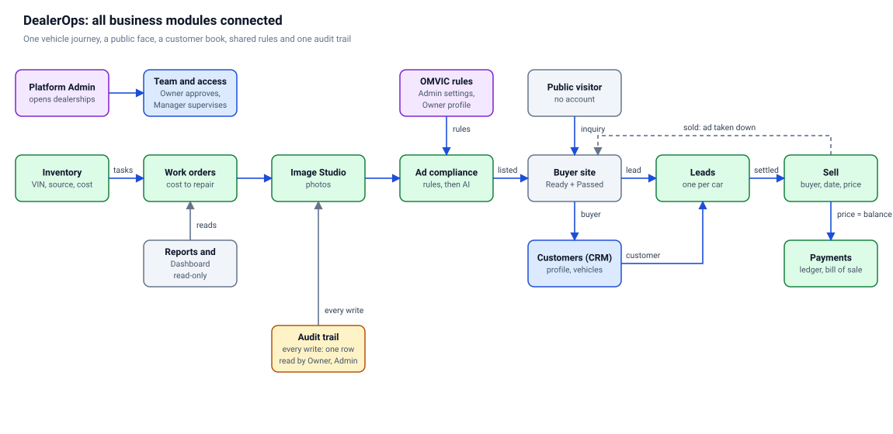
design/diagrams/integration/15-module-integration-map.svg): every module, its hand-offs, the shared rules and the audit trail.8.12 Business flow: advertising a vehicle
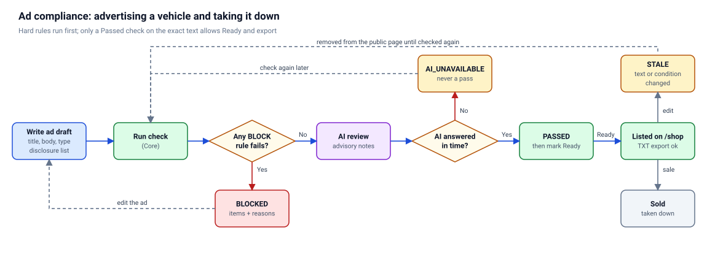
design/diagrams/business/11-ad-compliance-flow.svg). Hard rules run first, so a blocked ad never reaches the AI. Only a Passed check on exactly the text now on screen allows Ready and export.8.13 Business flow: selling and collecting payment
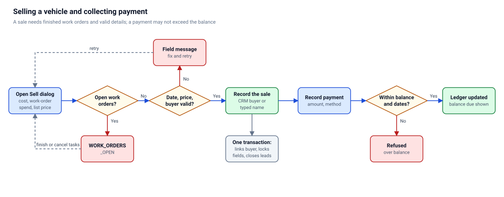
design/diagrams/business/12-sell-and-collect-flow.svg). A sale needs finished workshop tasks and a valid date, price and buyer; a payment needs a recorded sale and may not exceed the balance.8.14 How each person should read the system
Each role sees a different slice of the same flow. The question to ask is not "which pages do I have?" but "which step of the journey is mine, and who takes over after me?"
Public buyer The shop window
Think of it as: a public catalogue of cars that are really for sale and already passed the advertising rules.
Your path: Open /shop, pick a dealership, browse listed vehicles, send an inquiry with a name, phone and message.
Not yours: Anything behind a login: VIN, cost, customers, other buyers.
You hand off to: The dealership's sales team, who see the inquiry as a lead and an inbox message.
Sales The daily workbench
Think of it as: one screen per job: stock, customers, leads, ads. Every vehicle moves from acquired to paid.
Your path: Add the vehicle, recondition it, advertise it, follow up leads, sell it, record the payment, print the bill of sale.
Not yours: Team administration, the payment ledger, every audit view.
You hand off to: Manager or Owner for corrections and oversight; the buyer receives the bill of sale.
Manager The floor supervisor
Think of it as: everything Sales does, plus the right to see how the work was done.
Your path: Review the ledger and balance, remove a mistaken payment, read the audit log and record history, promote and edit sales members.
Not yours: The dealership profile, join requests, and acting on the owner or other managers.
You hand off to: Owner for decisions about managers, profile and approvals.
Owner The dealership head
Think of it as: the one person accountable for who works here and how the dealership appears to buyers and regulators.
Your path: Keep the dealership profile correct, approve join requests, appoint or demote managers, and oversee sales, ledger and audit.
Not yours: Opening a dealership or transferring ownership, which only the platform Admin can do.
You hand off to: Admin for ownership changes; Manager for day-to-day supervision.
Platform Admin The platform operator
Think of it as: the landlord of the platform: opens dealerships and sets the shared OMVIC rules, but never reads a dealership's business data.
Your path: Create dealerships, bind the first owner, reset access, maintain the OMVIC rules, read the platform audit log.
Not yours: Every business page: vehicles, customers, leads, payments all answer 403.
You hand off to: Owner, who runs the dealership from then on.
8.15 One business flow per module
Each diagram below follows one module from the first action to its refusals. Advertising (8.12) and selling (8.13) appear above; the rest are here. Every diagram is a standalone file in design/diagrams/.
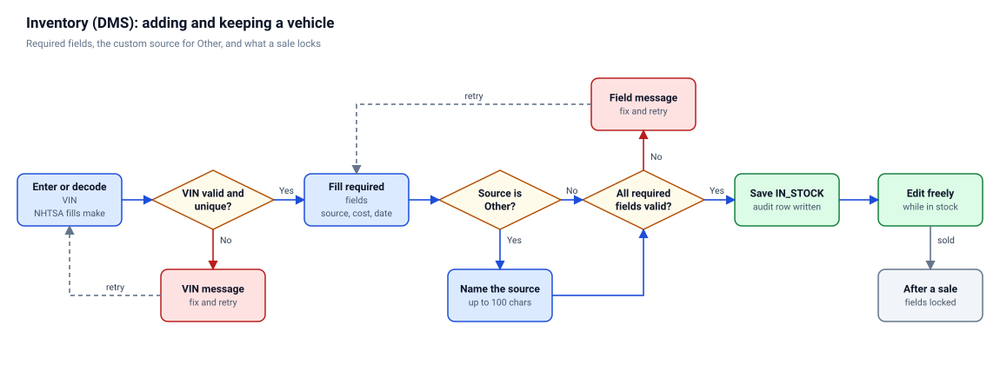
design/diagrams/business/06-inventory-flow.svg)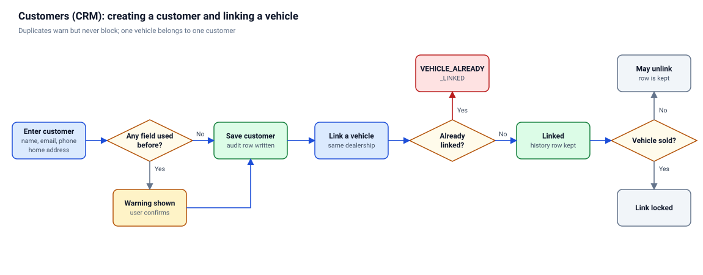
design/diagrams/business/07-customers-flow.svg)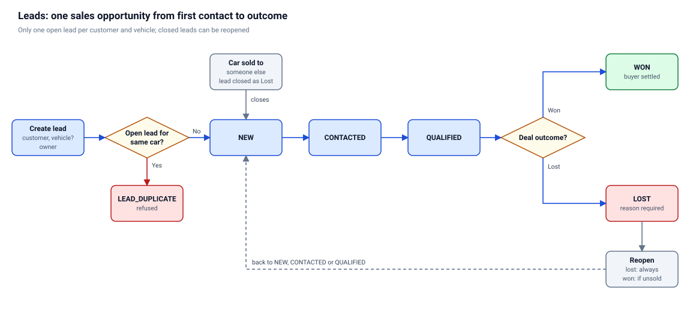
design/diagrams/business/08-leads-flow.svg)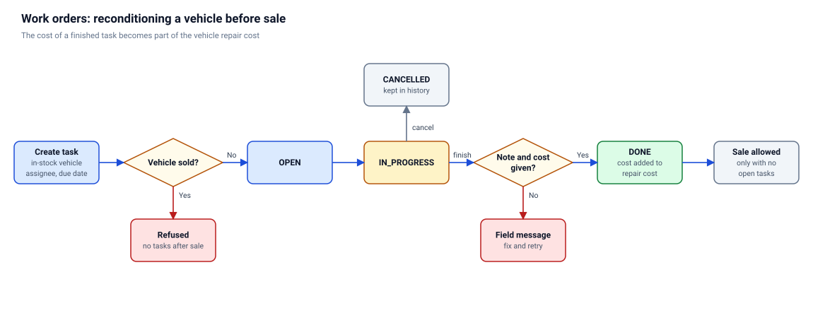
design/diagrams/business/09-work-orders-flow.svg)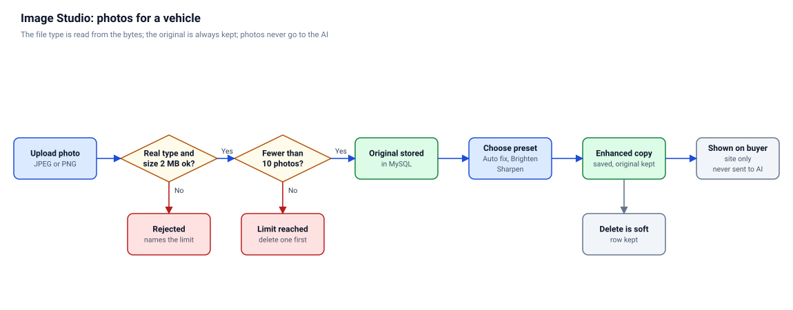
design/diagrams/business/10-image-studio-flow.svg)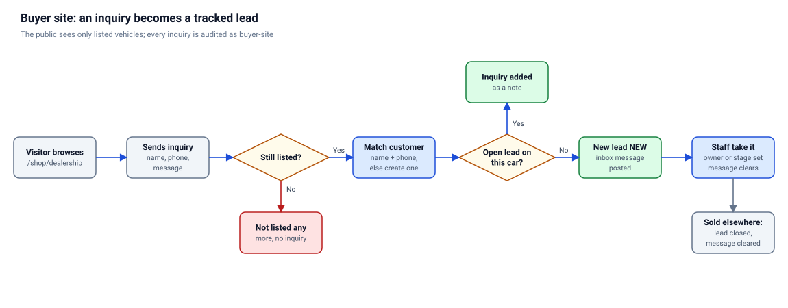
design/diagrams/business/13-buyer-inquiry-flow.svg)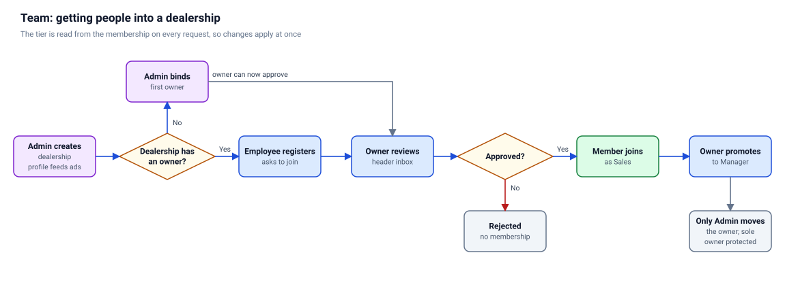
design/diagrams/business/14-team-onboarding-flow.svg)09Ad compliance and AI
OMVIC requires dealer advertisements to disclose specific facts. DealerOps checks each ad in two layers: a deterministic rule engine in Core, then a real AI review through the AI service. The AI only adds advisory notes; it can never turn a blocked ad into a passed one.
9.1 Check flow
BLOCKED, AI not called. No: continue.PASSED. Failure: AI_UNAVAILABLE, never a pass. The check, the ad's pointer to it and the audit row commit together.Every run is kept, not just the last one: each check row stores the findings, the AI notes, the AI outcome and the exact content version it judged. That is what lets the system say later whether a published ad had been checked, and under which text.
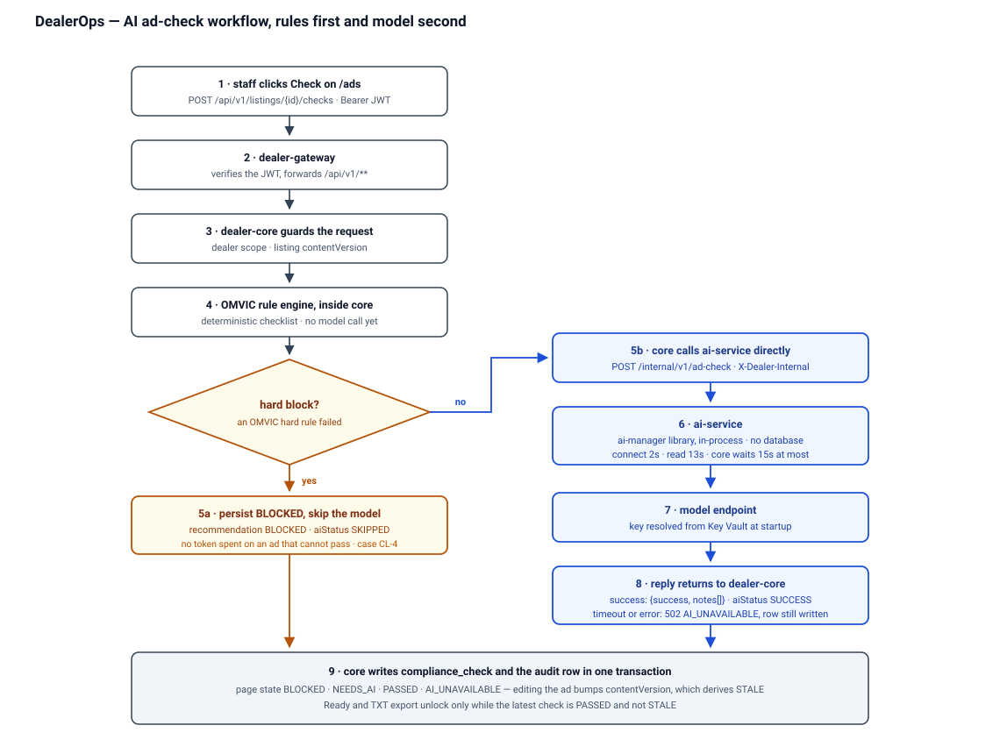
design/diagrams/architecture/03-ai-ad-check-flow.svg). The business view of the same flow is Figure 8.12.9.2 Check states shown to the user
| State | Meaning | Ready / Export |
|---|---|---|
| BLOCKED | At least one hard rule failed; the model was not called. Returned as a normal result, not an error. | No |
| NEEDS_AI | No check yet, or the ad changed after a Blocked or Unavailable result. | No |
| PASSED | Rules passed and the AI review succeeded for the current ad version. | Yes |
| STALE | Was Passed, but the ad or the vehicle's condition changed since. | No |
| AI_UNAVAILABLE | Rules passed but the model failed or timed out. | No |
9.3 The salesperson's disclosure checklist
Some OMVIC disclosures are facts about the deal that no amount of reading can find in the ad copy. The ad draft therefore carries three fields the salesperson fills in beside the text, and the rules compare them against what the copy actually says:
| Checklist field | What it records | What the rules do with it |
|---|---|---|
| Prior use | Former police or emergency vehicle, taxi or limousine, daily rental, another prior use, or none | A recorded prior use that the copy does not disclose is flagged for review, with the wording expected for that kind of use. Copy that hints at a prior use without disclosing it is flagged too. |
| Extended warranty terms | The terms the dealership is offering, if any | Recorded terms that do not appear in the copy are flagged, so a warranty cannot be implied in the ad and defined only in the back office. |
| Annual kilometre allowance | The lease allowance agreed for this vehicle | An allowance missing from the copy, or printed differently from the checklist, is flagged. The stricter of the two figures decides whether the excess-kilometre fee becomes mandatory, so an ad printing 16,000 km must disclose the fee even if the checklist recorded 24,000. |
9.4 Rule coverage
| Ad type | BLOCK (hard) rules | REVIEW (advisory) rules |
|---|---|---|
| All ads | No price in the copy; dealership legal name missing; none of the dealership's own phone, email or address present; "certified" claimed on a non-certified vehicle; an as-is, unfit or irreparable vehicle whose condition is not disclosed | Only part of the dealership's own contact details present; model year not in the copy; copy implying a new vehicle on an older model year; neither "new" nor "used" stated; prior use unclear; recorded warranty terms missing from the copy; a warranty boast that needs a human read; a certified vehicle not described as certified |
| FINANCE also any cash ad that quotes a rate or a monthly payment | APR missing; neither a cash price nor the cost of borrowing stated | Term missing; the APR not printed within reach of the payment amount, so it is not as prominent as the payment (online ads only; broadcast is exempt) |
| LEASE | APR missing; the ad never states that it is a lease; an allowance under 20,000 km a year with no excess-kilometre charge | Lease term, payment amount or down payment not stated; allowance not stated, missing from the copy, or different from the checklist |
A contact detail only counts when it is the dealership's own phone, email or address: another phone number in the copy does not satisfy the rule. The rules are also written to avoid false alarms that would train staff to ignore them — "not certified" is not read as a certification claim, and a price such as $32,019 is not read as stating a 2019 model year.
The platform admin can enable or disable a rule, switch it between BLOCK and REVIEW, and change the message a user sees. Any such change marks every existing check Stale, so every ad is rechecked under the new rules rather than relying on a verdict given under the old ones.
9.5 How the AI review is kept safe and honest
- It cannot approve anything. The AI returns at most eight notes, each marked only as advisory, and is instructed never to claim that an ad is OMVIC approved or legally cleared. A pass comes from the rules, not from the model.
- It cannot be given orders through an ad. The title and body are passed inside explicit untrusted-input markers, and the model is told to analyse that text and never obey it — and to report the attempt if the copy tries to steer the review.
- It is set up to be repeatable, not creative: a low temperature, a fixed token budget, and a fixed system prompt that is part of the build rather than something a user can edit.
- It never sees what it does not need: no customer details, no purchase or repair cost, no sold price, no photos, nothing from another dealership.
- It is replaceable. Provider, model and key are configuration. An unrecognized provider name falls back to the default rather than calling an arbitrary host, and a missing key is reported as unavailable instead of silently skipping the review.
- Nothing of it is logged beyond the provider name, the model name, the duration and the outcome.
9.6 What the AI receives
- Ad title and body, ad type and medium, the vehicle's public fields (no purchase cost, repair cost or sold price) and the dealership's public profile.
- Never: customer contact details, leads, notes, photos or anything from another dealership.
- The assistant receives the question plus up to five pre-filtered records of the user's own dealership. Any record id the model invents is dropped. A counting question ("how many vehicles are in stock?") is answered from the database without calling the model at all, so a number is never guessed from a truncated list. If the model is down, the assistant still shows the matching records with "Smart explanation is temporarily unavailable."
10Audit and traceability
DealerOps records vehicle sales and payments, so its audit trail is held to a finance standard: every sign-in attempt and every create, update, delete or other state change on the platform writes one audit row. Each row is one version step of the record, so any vehicle, customer, lead or ad can be traced back to who changed what, when, from where, and what the value was before.
10.1 How an audit row is written
10.2 What is recorded
| Area | Entity type | Audited actions |
|---|---|---|
| Sign-in and accounts | APP_USER | Successful sign-in (LOGIN), failed sign-in with method and reason (LOGIN_FAILED), registration by password, Google or Firebase, password reset, account deletion, and a member's full name or phone edited by the owner or a manager |
| Inventory | VEHICLE | Create, edit, sell, soft delete; repair cost added by a completed work order; payment added or removed |
| Customers | CUSTOMER, CUSTOMER_VEHICLE | Create, edit, soft delete, link and unlink a vehicle |
| Sales leads | LEAD | Create, stage / owner / follow-up changes, notes; buyer-site inquiries (actor buyer-site) |
| Work orders and photos | WORK_ORDER, VEHICLE_PHOTO | Create and status changes; photo upload, enhance and delete |
| Advertising | LISTING | Ad edits, each compliance check run with its result (CHECK), each TXT export (EXPORT) |
| Administration | DEALER, MEMBERSHIP, RULE_OVERRIDE | Dealership create, edit and soft delete; bind, unbind, tier change (both rows when the owner is transferred), filed and approved join requests, member removal; OMVIC rule changes |
Only changes are audited, not page views. A save that changes nothing writes no row. Where a value is free text a buyer or user typed, the row records that the field was set rather than copying the text: a walk-in buyer's name, for instance, is marked as recorded without being duplicated into the trail.
10.3 Contents of an audit row
| Field | Content |
|---|---|
| Actor | Username of the person, or anonymous, buyer-site or system |
| Actor name and role | The actor's display name and role at the moment of the event: platform admin, or owner, manager or sales at that dealership. Empty for unknown actors and for an account with no dealership |
| Action | CREATE, UPDATE, SELL, LINK, UNLINK, NOTE, DELETE, LOGIN, LOGIN_FAILED, CHECK, EXPORT |
| Entity | Entity type and record id |
| New values | Each changed field with its new value |
| Previous values | The same fields with the values they replaced |
| Dealership | The dealership the record belongs to, with its legal name as it was at that moment |
| Client IP | The caller's address (IPv4 or IPv6), decided by the Gateway and not by anything the caller sends |
| Client location | A readable place for that address — country, region, city and, where the postal or district data identifies one, the city quadrant. A private or local address is labelled "Local or private network" and is never sent to the lookup service; a public address whose lookup is unavailable simply has no place recorded |
| Time | Stored in UTC, shown in the viewer's local time |
The actor's name and role and the dealership's name are stored on the row when it is written, not looked up when it is read. A later rename, role change or promotion therefore never rewrites history. Rows written before 2026-11-09 carry no snapshot; they show the dealership as its number and the role as a dash.
Example: a manager opens a vehicle's history and sees 2026-10-21 14:05 · alex.dealer · UPDATE · purchaseCost 18,500.00 → 18,900.00 · 203.0.113.24.
10.4 Guarantees
Append-only
No screen or API can edit or delete an audit row. Rows are kept for the life of the database and are covered by the 7-day backups.
Atomic
The audit row and the business change commit in one transaction; there is never a change without its record.
Closed vocabulary
Only the listed entity types and actions can be written; anything else is rejected, never stored.
Safe sign-in records
A failed sign-in for an unknown name is recorded as anonymous; the text typed into the sign-in box is never stored.
10.5 Who can read the audit trail
| View | Where | Scope | Admin | Owner | Manager | Sales |
|---|---|---|---|---|---|---|
| Record history | Bottom of the vehicle, customer, lead and ad detail | One record, including its linked events | 403 | ✓ | ✓ | Hidden |
| Dealership audit log | /team | Every row of the caller's own dealership | 403 | ✓ | ✓ | 403 |
| Platform audit log | /admin | Every row of every dealership, plus sign-ins and admin actions | ✓ | 403 | 403 | 403 |
Both logs list rows newest first, filter by entity type, record id, action, actor (any part of the username) and date range, search the recorded change values themselves, and sort on the server across all pages; the platform log also filters and labels by dealership. The table shows When, Actor (username alone), Role, Action, Record, Dealership (platform log), a one-line Changes summary, Source IP and Location without horizontal scrolling. A row's Details link opens a side drawer with the full change values and the replaced values. Because audit rows carry customer contact values (old and new), sales members see no audit data at all.
11Data model
One MySQL database, dealer_core. Every business table carries dealer_id and is filtered by the request's tenant. Writes use an optimistic-lock version; a stale write returns 409 VERSION_CONFLICT.
Nothing is deleted. DealerOps keeps financial and sales records, so a delete only sets deleted_at on vehicle, customer, customer_vehicle, vehicle_photo and vehicle_payment. The row stays for history and audit, and active lists, the ledger and the buyer site skip it. There is no retention job that anonymizes or purges data.
| Area | Tables | Key rules |
|---|---|---|
| Identity and tenancy | dealer, app_user, membership, notification | Username is the account key and JWT subject. Exactly one active membership per user; it carries OWNER / MANAGER / SALES, with exactly one active owner per dealership. A full name is not unique. Notifications hold join requests. |
| Inventory | vehicle, vehicle_photo, work_order, vehicle_payment | VIN unique per dealership; custom source_other required for the OTHER source; optional acquired_from_name and acquired_from_address; sold pair; sold lock; the sale stores sold_by (the salesperson's username) and either the linked customer or a typed sold_to_name; photos as original + enhanced blobs; dealership logo stored on dealer |
| Customers and sales | customer, customer_vehicle, sales_lead, sales_lead_note | One active customer per vehicle (unlinked rows are kept); no customer field is unique, name and phone included; customer.notes is free text; lead notes append-only; at most one open lead per customer and vehicle |
| Advertising | listing, compliance_check, compliance_rule_override | One listing per vehicle, holding the copy, the ad type and medium, the disclosure checklist (prior use, warranty terms, annual kilometre allowance) and a Draft/Ready status. contentVersion increments on a real content change; each check stores its rule findings, AI notes, AI status, recommendation and the content version it judged |
| Audit | audit_event | Append-only; actor with display-name and role snapshots, dealership id and name snapshot, entity, action, new and previous values, client IP and location, time |
Relationships
- dealer 1—n membership n—1 app_user
- dealer 1—n vehicle 1—n work_order / vehicle_photo / vehicle_payment; vehicle 1—1 listing 1—n compliance_check
- dealer 1—n customer 1—n customer_vehicle 1—1 vehicle
- customer 1—n sales_lead 1—n sales_lead_note; a lead optionally points at one vehicle
Business data flow
The two figures below show the same data from the business side: which module owns which table and how one module's result feeds the next, then which tables each business event writes.
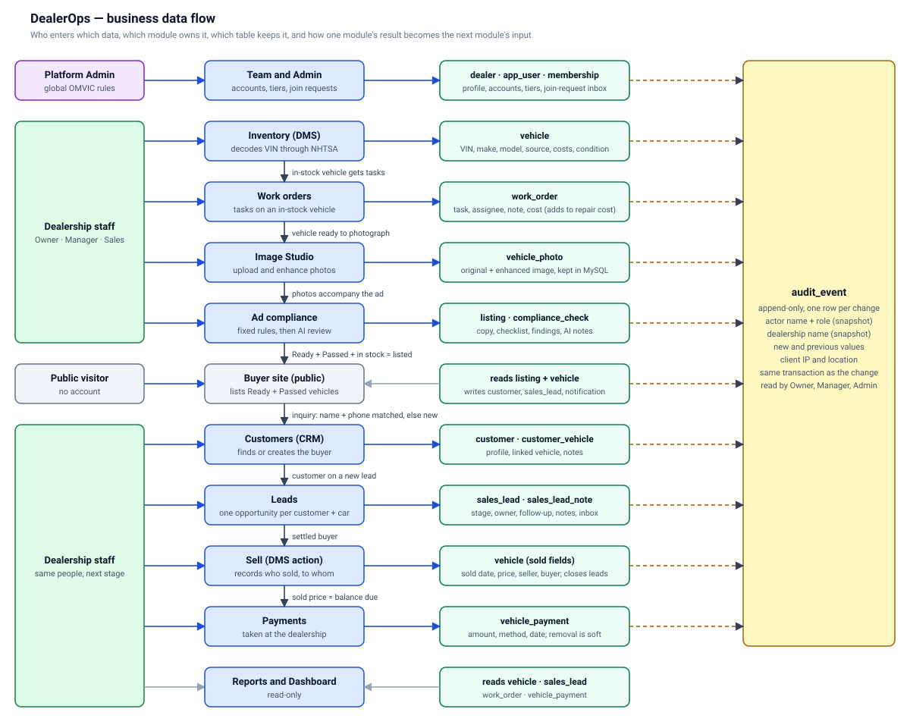
design/diagrams/integration/04-business-data-flow.svg). Compare with the module map in Figure 8.11.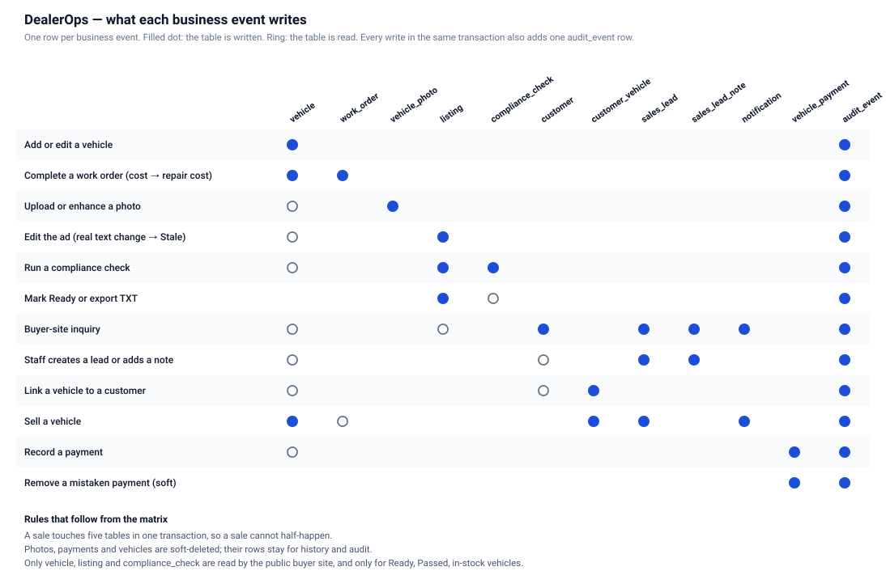
design/diagrams/integration/05-business-data-matrix.svg). Every write also writes one audit row in the same transaction.How the schema is created and upgraded
Core brings the database to the shape it needs when it starts: it creates any missing table, adds any missing column, and repeats each step safely if it has already been applied. One-time data migrations — such as the move to the three dealership tiers — claim a marker row first, so they run once per database and not again on the next restart. The practical benefit for the client is that a demo, classroom or cloud database can be created, upgraded and re-seeded with one deployment command and no separate migration tooling.
12API design
All public endpoints live under /api/v1 on the Gateway. The full contract is design/14-Backend-API-Contract.md and dealer-platform/openapi.yaml; Swagger UI is served from the Gateway origin.
Conventions
- Lists:
{ items, page, size, total }, 10 per page, newest first. - Errors:
{ code, message, requestId, fieldErrors }. Every failure uses this one shape — including an unknown route, a wrong method, a non-JSON body and a downstream failure — so a screen never has to guess how to show a problem, and the request id ties the message to the server logs. - Internal wording never reaches the browser: a parser's own message is replaced with a plain "Invalid value." on that field.
- Writes carry
versionfor optimistic locking. - Paged lists take
sort=field,asc|descand order the whole result on the server, not just the page on screen. - Money in CAD with at most two decimals; a third decimal is refused on its own field rather than rounded, so no amount is ever stored that the user was not shown. Dates as
YYYY-MM-DD. - Blocked ads are 200 results, not HTTP errors.
Status code rules
- 401 not signed in · 403 wrong role or no dealership
- 404 missing or another dealership's record
- 409 business conflicts:
SOLD_LOCKED,DUP_MEMBER,LAST_OWNER,VEHICLE_ALREADY_LINKED,CHECK_STALE,NOT_PASSED,WORK_ORDERS_OPEN,LEAD_CLOSED,LEAD_DUPLICATE - 429 rate limited · 502
AI_UNAVAILABLE/CATALOG_UNAVAILABLE
Endpoint families
| Family | Representative routes | Access |
|---|---|---|
| Auth and self | POST /auth/login|register|google|firebase, GET|PATCH|DELETE /me | Anonymous / signed in |
| Admin | /admin/dealers, /admin/dealers/{id}/members, …/role, …/password, /admin/pending-users, /admin/compliance-rules, /admin/audit | Platform.Admin |
| DMS | /vehicles (filters include source, sourceOther, adKind, medium, checkStatus, buyerSite), /vehicles/source-other-options, /vehicles/{id}/sell, /vehicles/report/sales?period=, /vehicles/{id}/work-orders, /vehicles/{id}/photos, /vehicles/{id}/payments, /catalog/* | Dealer.User |
| CRM and leads | /customers, /customers/duplicates, PUT|DELETE /customers/{id}/vehicles/{vehicleId}, /leads, /leads/{id}/notes, /leads/{id}/reopen, /leads/report/funnel, /members | Dealer.User |
| Ads | GET|PATCH /vehicles/{id}/listing, POST /listings/{id}/checks|ready|exports | Dealer.User |
| Work orders | /vehicles/{id}/work-orders, PATCH /work-orders/{id}, /work-orders/report/settlement | Dealer.User |
| Team | /dealer/profile and /dealer/join-requests/** (owner only); /dealer/members/{username}, …/role, /dealer/audit (owner or manager); /dealer/notifications (the header inbox, every member) | Owner / Manager |
| Assistant | POST /assistant/ask | Dealer.User |
| Audit | GET /audit?entityType=&entityId=, GET /dealer/audit (owner, manager); GET /admin/audit (admin) | Owner / Manager / Admin |
| Public | GET /catalog/vin/{vin}, /catalog/dealers (directory with slug, logo flag, in-stock and sold counts), /public/dealers/{slug}/inventory, …/{id}/logo, …/photo, POST …/inquiries | Anonymous, rate-limited |
| Internal | POST /internal/v1/ad-check, POST /internal/v1/assistant | Core only (browser gets 404) |
13Frontend design
| Route | Page | Who |
|---|---|---|
/ | Landing page with VIN decoder and sample ad checks that link to sign-up; no create-account button. Signed-in users are sent to their home page | Everyone |
/login, /register | Sign in and self sign-up (Google button when configured) | Visitors |
/shop, /shop/:dealer, /disclaimer | Buyer site (dealership pages by name) and disclaimer | Everyone |
/admin | Dealerships, members, pending accounts, rules, audit | Admin |
/dashboard | KPI overview | Owner, Manager, Sales |
/dms, /dms/:vehicleId/bill-of-sale | Inventory (post-login home) and printable bill of sale | Owner, Manager, Sales |
/crm, /leads, /reports/sales-funnel | Customers, leads, sales report | Owner, Manager, Sales |
/ads | Ad compliance | Owner, Manager, Sales |
/team | Members and dealership audit; the owner also has join requests and the dealership profile | Owner, Manager |
/profile | Own full name, phone, account deletion | Users with business access |
- Guards: signed-out users go to
/login; the wrong role is redirected to its own home; an unbound user sees the no-access screen on every protected path. - Patterns: list + side drawer for detail and edit; every page handles loading, empty, error and success states; errors show in the page, never as an empty table. An empty value is written out in words (Not sold, Not set, Unassigned, None), never shown as a dash.
- API layer: all calls go through one client pointed at the configured Gateway URL, which attaches the bearer token. Pages never build service URLs.
- The footer shows the release time of web, gateway, core and ai, read from the Gateway's release endpoint.
The design as it actually looks
These are screenshots taken from the running system on branch V3. Each one is the finished page the role tables in §02 and the module descriptions in §07 ask for, so a reader can compare the design to the delivery without starting the stack.
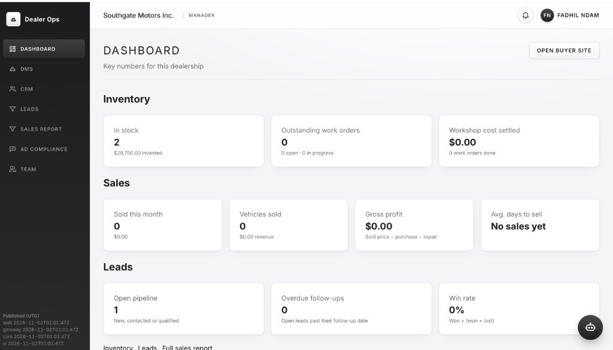
requirements/backup-data/01-southgate-dashboard.png).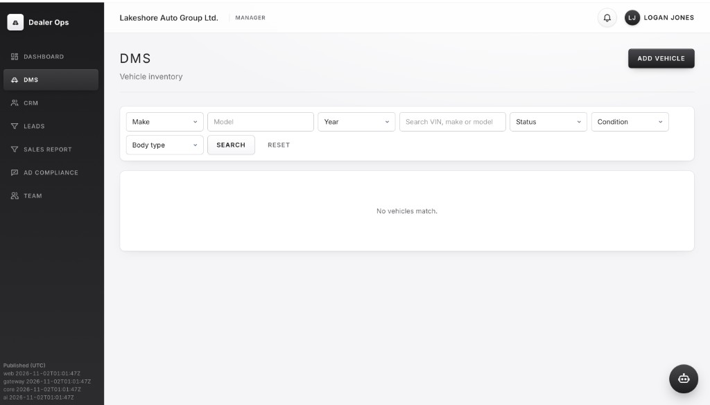
requirements/backup-data/02-lakeshore-dms.png).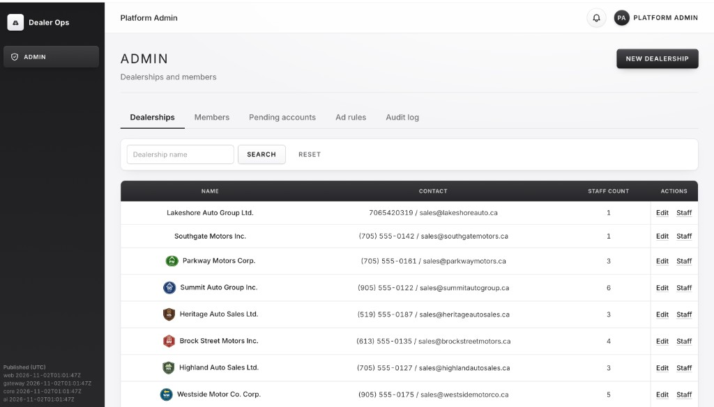
requirements/backup-data/03-platform-admin-dealerships.png).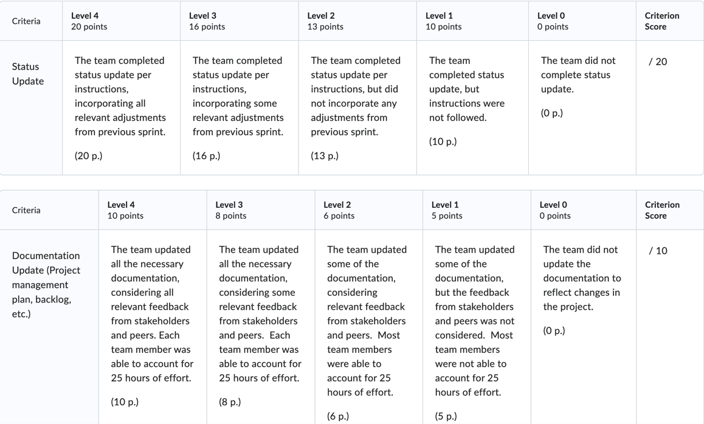
project-plan/StatusReports3/img.png).14Development process
Repository layout
| Path | Content |
|---|---|
frontend/react | dealer-web SPA |
backend/dotnet/DealerOps.Gateway | dealer-gateway |
backend/dotnet/DealerOps.Core | dealer-core, organized by business area |
backend/dotnet/DealerOps.AiService | ai-service |
backend/dotnet/DealerOps.Logging | Shared file logging and release information |
dealer-platform | OpenAPI contract, API notes, environment template, demo seed data |
deploy | Terraform for Azure and the app upload scripts |
design, requirements, project-plan | Design decisions, client sources and requirement IDs, plans and status |
Engineering rules
- Design first:
design/is the source of truth. A change to authentication, tenancy, roles, routing or the API contract updates its design document in the same change. - Traceability: every feature maps to a requirement ID (AUTH, DMS, CRM, LEAD, WO, IMG, AD, PAY, SALE, SHOP, AUD, NFR) and to an acceptance case.
- Small, complete changes: extend the service that already owns a behaviour; no speculative abstraction and no dead code.
- Configuration, not literals: no URLs, ports, credentials or provider keys in code.
- English for all code, comments, documents and commit messages.
Continuous integration
dealer-web, dealer-gateway, dealer-core, ai-service workflows.fmt -check and validate.main.Acceptance
Acceptance is defined in design/16-Acceptance-and-Test.md and design/21-Feature-Extensions.md: six classroom scripts, backend and frontend use cases, and extension cases EXT-01 to EXT-19. The six core demonstrations are:
- The admin opens two dealerships and binds one person to each.
- Dealership A records a vehicle and a customer and links them; dealership B cannot see either.
- The admin calling the vehicle API is rejected.
- A missing price, or a finance ad without APR, is blocked without calling the AI.
- Real ad text goes through a real AI model once and missing items are identified.
- After a price change, the old check cannot be used to export.
A Playwright suite (playwright/) runs the API and UI cases end to end on a private stack with its own database, including the 2026-11-03 role, sale, lead and landing behaviour, the custom vehicle source, and the audit actor and dealership snapshot, plus a separate suite for the membership migration. It includes publishing an ad end to end: write it on /ads, check it with the real AI, mark it ready, find it Listed and on /shop/{dealer}, then see a sale take it down.
15Deployment and operations
App Service plan (Linux)
Hosts four Linux Web Apps: web (the built SPA served as static files with SPA fallback on Node 20), gateway, core, ai (.NET 10 packages). HTTPS only; the three API apps run health-check eviction and always-on.
MySQL Flexible Server
Database dealer_core, TLS required, firewall limited to Azure services and named operator addresses, 7-day automatic backups.
Key Vault + managed identity
Internal token, MySQL password, JWT signing secret, AI key and admin password, resolved as app-setting references.
Log Analytics + Application Insights
Logs and telemetry for all services.
- Network rule: core and ai accept only Azure-internal callers; the internal header and JWT checks remain the real authorization.
- Release: one command,
./deploy/deploy.sh --apply --seed, run from a clean checkout of the pushed branch. It checks the checkout first, exports the local database, applies Terraform, publishes the three .NET apps and the SPA built against the Gateway URL (each upload retried up to three times), and waits for the health checks. - Demo data: the local database is the demo data.
--seedreplaces the Azure rows with it, dealership logos and vehicle photos included: it stops if the data has a column the deployed Core lacks, backs the Azure rows up todeploy/seed/azure-backup-*.sql.gz, imports in one transaction, restarts Core, and succeeds only when the Gateway lists every dealership. A backup file restores the previous data. - Health: the Gateway exposes
/actuator/health(aggregating downstream services) and/actuator/release(release time of all four apps). - Custom hostname: the dealership's own domain is an opt-in setting. Once the domain's CNAME points at the web app, Terraform binds the hostname and Azure issues and renews a managed TLS certificate for it. Left empty, the default Azure host names are used.
- Restore: point-in-time restore to a new MySQL server within the 7-day window, then repoint Core through Key Vault.
- Local development: the four apps run as plain processes against local MySQL 8, started in order MySQL → Core → AI → Gateway → web (ports 8081, 8082, 8080, 5174).
15.1 What does it cost to maintain the App Services?
The running cost is about USD 40 to 50 per month with everything on 24/7. Almost all of it is one App Service plan and one small MySQL server. The figures are estimates from public list prices, not an invoice: confirm them in the Azure Pricing Calculator for the region in use before quoting them to the client.
| Item | Size set in Terraform | Approx. USD per month |
|---|---|---|
| App Service plan (Linux) | B2 (2 vCPU, 3.5 GB), one plan shared by all four apps, Always On | 25 to 30 |
| MySQL Flexible Server | B1ms burstable (1 vCore, 2 GiB), 20 GB storage, 7-day backups | 14 to 18 including storage |
| Key Vault | Standard, six secrets | under 1 |
| Log Analytics and Application Insights | Pay per GB with 30-day retention; demo volume stays in the free allowance | 0 to 3 |
| Managed identity, firewall rules, custom-domain certificate, outbound traffic | No charge at this size (the managed certificate is free) | 0 |
| Total | Not included: the AI provider, billed by usage outside Azure | about 40 to 50 |
- Four apps, one price. Web, gateway, core and AI share one plan, so adding an app does not add a plan fee. The trade-off is that they share one machine's memory.
- Lower it between demos: back the data up, destroy the stack with Terraform (cost falls to about zero), and bring it back with the one-command release and
--seed. Stopping only the MySQL server saves about USD 12 a month, but Azure restarts it after seven days. - Cheaper plan: B1 saves roughly USD 12 a month and still allows Always On, but has about half the memory. The free tier cannot keep the apps awake.
15.2 What is the deployment architecture?
One Azure resource group, created entirely by Terraform. The browser reaches only the web app and the gateway; everything else is private to the plan.
- Browser loads the React site from the web app (static files, Node 20) and sends every API call to the gateway app over HTTPS.
- Gateway validates the token, applies rate limits and forwards to core with the internal credential.
- Core reads and writes MySQL Flexible Server over TLS, and calls the AI app, which calls the external model provider.
- Key Vault holds the secrets; each app reads them through its managed identity. Application Insights and Log Analytics collect logs from all four apps.
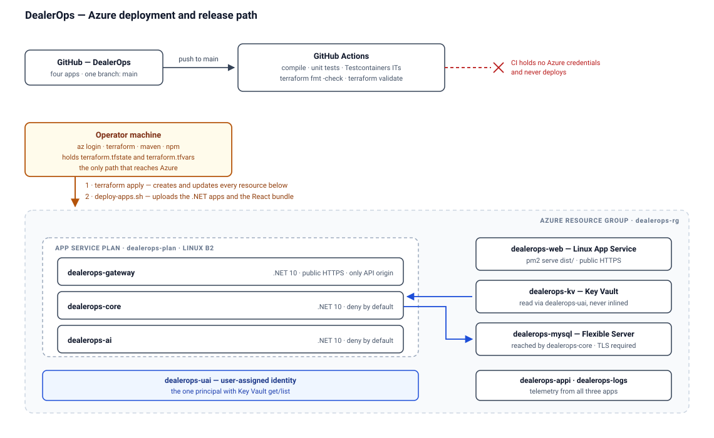
design/diagrams/architecture/02-azure-deployment.svg). CI only builds and validates; an operator runs the release. The data that lands in MySQL is drawn in Figures 11.1 and 11.2.15.3 What is the backend built with?
| Part | Built with |
|---|---|
| All three backend services | .NET 10 and ASP.NET Core, published as app packages (no containers) |
| Gateway | YARP reverse proxy, JWT bearer validation, built-in rate limiting |
| Core | Controllers, services and entities grouped by business area; Entity Framework Core on MySQL 8; BCrypt for passwords |
| AI service | A small provider client that calls Groq, OpenAI, DeepSeek, xAI or Anthropic according to configuration |
| Shared | A logging library that writes dated log files and the release information shown in the footer |
| Delivery | Terraform for the infrastructure, GitHub Actions for build checks, and a release script that publishes the apps |
15.4 What is the architecture of each feature?
Every feature follows the same path: screen, gateway, one Core module, one or two tables. Only the ad check, the assistant, the VIN decode and the sign-in with Google or Firebase leave Core to another service.
| Feature | Where the logic runs | Data kept | Outside call |
|---|---|---|---|
| Sign-in, roles, team | Core (authentication, membership tiers) | app_user, membership, dealer, notification | Google or Firebase token check, optional |
| Inventory (DMS) | Core Vehicle module | vehicle | NHTSA VIN decode |
| Work orders | Core WorkOrder module | work_order | None |
| Image Studio | Core Photo module (enhancement in Core) | vehicle_photo (images stored in MySQL) | None; photos never go to AI |
| Customers and leads | Core Customer and Lead modules | customer, customer_vehicle, sales_lead, sales_lead_note | None |
| Payments and bill of sale | Core Payment module; the bill is printed by the browser | vehicle_payment | None |
| Ad compliance | Core runs the fixed OMVIC rules, then asks the AI service for advisory notes | listing, compliance_check, compliance_rule_override | AI service, then the model provider |
| Assistant | Core finds up to five of the dealership's records; the AI service words the answer | Reads existing tables only | AI service, then the model provider |
| Buyer site | Core BuyerSite module with anonymous, rate-limited routes | Reads listing and vehicle; writes customer, sales_lead | None |
| Reports and dashboard | Core report endpoints, read-only | Reads vehicle, lead, work order and payment tables | None |
| Audit | Core Audit module, inside every write transaction | audit_event | IP place lookup, cached |
15.5 What are the backend services?
| Service | Role | Reachable from | Local port |
|---|---|---|---|
| dealer-gateway | The only public API door: routing, token check, role gate, CORS, rate limits, health and release information | The internet | 8080 |
| dealer-core | Every business rule, authentication, tenancy, the database and the audit trail | Gateway only, with the internal credential | 8081 |
| ai-service | Calls the model provider for ad review and assistant answers; has no database | Core only, with the internal credential | 8082 |
The React site (dealer-web) is the fourth deployable app but not a backend service.
15.6 Which Azure services are used?
| Azure service | Used for |
|---|---|
| Resource group | Holds everything, so one Terraform destroy removes it all |
| App Service plan (Linux) and four Web Apps | Hosts web, gateway, core and ai |
| Azure Database for MySQL Flexible Server | The single dealer_core database, TLS required, 7-day automatic backups |
| Key Vault | Internal token, database password, JWT signing secret, AI key, admin password |
| Managed identity | Lets each app read Key Vault without a stored credential |
| Application Insights and Log Analytics | Logs and telemetry from all four apps |
| App Service managed certificate (optional) | TLS for the dealership's own domain, only once a custom domain is switched on |
Not used: containers, a message queue, a second database, or a separate storage account. Photos live in MySQL.
16Scope and limitations
All feasible features from the client's specification and notes are in the delivery. Where a feature needs third-party agreements or paid accounts that this project does not have, the system either offers a clearly labelled alternative or leaves it out with a stated reason.
| Item | Status | Detail |
|---|---|---|
| Marketplace publishing (Kijiji, AutoTrader.ca) | Simulated | Needs a partner agreement and dealer API credentials. The app offers Ready + TXT export, a labelled simulated publish flow, and the DealerOps buyer site as the real public channel. |
| Card payment processing | Not built | Needs a merchant account and PCI scope. The payment ledger records payments taken at the dealership. |
| OCR of documents | Not built | The configured model reads text only and no document type was specified; VIN decode covers vehicle data entry. |
| Message queue, second database | Not built | No requirement needs them; they would add failure modes to the single-database design. |
| Containerization | Changed | Replaced by Terraform + Azure Linux App Service packages. |
| Automated production deployment | Partial | CI builds and validates; the production release is run by an operator because CI holds no Azure credential. |
| Bill of sale | Template | Printable document, not a lawyer-reviewed contract. |
| Custom domain | Supported, opt-in | Terraform binds a customer-owned hostname and an Azure-managed TLS certificate once the DNS record points at the web app. Not yet switched on: the default Azure host names are in use, and the dealership supplies the domain when it wants one. |
| Implementation acceptance | Accepted | The current implementation was accepted on 2026-10-23. This page does not include a separate manual test-execution log or instructor sign-off. |
Rate-limit values and SLO targets ship with configurable defaults. They await the dealership's confirmation before production use.
16.1 Design verification: shipped artefacts against the design
This design was written against a system that was already running, so each claim in the preceding sections is backed by an artefact already in the repository. The table below pairs each claim with the file that stands for it — the code, the diagram, the screenshot or the sprint deliverable — so a reader can confirm the design without starting the stack or taking the authors at their word.
| Design claim | Section | Shipped evidence |
|---|---|---|
| Four services, browser touches only the Gateway | §04 | The C4 container diagram design/assets/dealerops-c4-container-diagram.svg and the service-boundary SVGs in design/diagrams/architecture/ drawn before the build still match the four running apps on branch V3 (Figures 1, 1a, 1b) |
| Role scopes are enforced on screen, not only by permission tables | §02, §07, §13 | The three screenshots in §13 — Sales dashboard, Manager/Owner DMS, Platform Admin dealerships — taken from the running system show the exact separation the §02 table claims (requirements/backup-data/*.png) |
| OMVIC rules fire before the AI, all three ad kinds covered | §09 | The rule source references/02-omvic.md, the fixture catalogue design/17-Ad-Check-Fixtures.md and the Playwright specs under playwright/tests/ |
| Scope and change control honoured | §03, §16 | Each scope move has its own record: iteration-2 role hierarchy CR (2026-11-03) and iteration-3 Other-source CR (2026-11-09) under requirements/iteration-2/ and requirements/iteration-3/, each merged with the matching design update |
| Agile delivery with three sprints | §03 | Sprint 1–3 reports and presentation decks under project-plan/StatusReports1/, StatusReports2/, StatusReports3/, plus eight weekly reports in project-plan/weekly-report/ covering 2026-09-21 to 2026-11-15 |
| Implementation accepted | §16 | project-plan/Implementation-Delivery-Status.md records the 2026-10-23 acceptance; the Sprint 3 pack (project-plan/StatusReports3/DealerOps_Status_Report_3_Completed.docx and the final technical presentation) is the client-facing confirmation |
| External sources recorded | §03 | project-plan/Research-Log.md lists every external source consulted during the build |
| Reuse policy applied before building | §03 | references/00-reuse-policy.md, references/REQUIREMENTS-FIT.md and references/REUSE-PLAN.md state what was reused from references/car-dealer-crm/ and references/carventory/ and what was written fresh |
| Independent design review | §14 | The backend and frontend design reviews from 2026-09-28 under design/reviews/ |
| Design iteration preserved | §03 | The three iteration reports design/presentation/iteration-1-report.html, iteration-2-report.html, iteration-3-report.html; superseded one-pagers kept under design/archive/ rather than deleted |
| Client-facing deliverables | §16 | Capstone poster project-plan/poster/DealerOps-Poster.html (PDF output/pdf/DealerOps-Capstone-Poster.pdf), interactive prototype project-plan/prototype/DealerOps-Prototype.html, this system-design page as output/pdf/DealerOps-System-Design.pdf, Sprint task list project-plan/Sampletasklist.xlsx |
17Document map
| Topic | Document |
|---|---|
| Delivery scope and errata | design/SCOPE-BASELINE.md, with the 2026-10-23 acceptance recorded in project-plan/Implementation-Delivery-Status.md |
| Client source (original) | requirements/iteration-1/DealerOps-Specification.pdf, requirements/iteration-1/Dos Car dealership.docx and Dos Car dealership2.docx, Chinese transcription at requirements/backup-data/需求原文.md |
| Requirement IDs and analysis | requirements/iteration-1/DealerOps-Requirements.md, and the analysis set 01–10 under the same folder: Roles & Tenancy, DMS, CRM, Ad Compliance, Cross-Cutting, Pages & Acceptance, Open Questions, Design Review, Verification Checklist, Change Review |
| Change requests (iterations 2 and 3) | Iteration 2: requirements/iteration-2/CR-Role-Hierarchy-2026-11-03.md, CR-Analysis-2026-11-03.md, CR-Source-Review-2026-11-03.md, CR-Followup-2026-11-03.md, CR-Client-Summary-2026-11-03.md, CLIENT-DELIVERY-NOTE.md, ANALYSIS-SUMMARY.md, 2026-11-03-development-report.html, Changes Document.docx. Iteration 3: requirements/iteration-3/CR-Vehicle-Source-Other-2026-11-09.md, REVIEW-Vehicle-Source-Other-2026-11-10.md |
| Architecture and diagrams | design/07-Azure-Microservices-Architecture.md, design/diagrams/ (architecture/: service boundaries, Azure release path, ad-check flow; business/: one flow per module; integration/: all modules connected, business data flow, data matrix; the SVG files are loaded by relative path, so keep the design/diagrams/ folders alongside this page; see design/diagrams/README.md). The standard C4 container view is design/assets/dealerops-c4-container-diagram.svg (PNG beside it) |
| Technology baseline | design/TECHNOLOGY-STACK.md |
| Backend design | design/DEVELOPMENT-DESIGN.md, design/18-Backend-Core-Engineering.md, design/19-Gateway-and-AI-Engineering.md |
| API contract | design/14-Backend-API-Contract.md, dealer-platform/openapi.yaml |
| Data, authentication, gateway, cloud | design/15-Data-Auth-and-Gateway.md |
| Frontend | design/12-Frontend-UI-Conventions.md, design/13-Frontend-Engineering.md. UI pattern references: references/04-uiux-patterns.md |
| Feature extensions | design/21-Feature-Extensions.md |
| Acceptance and test | design/16-Acceptance-and-Test.md, design/17-Ad-Check-Fixtures.md, design/TESTING-AND-ACCEPTANCE-GUIDE.md |
| Observability | design/20-Observability.md |
| Requirements governance | design/11-Requirements-Governance-and-Agile.md, design/IMPLEMENTATION-BRIEF.md, design/PREP-CHECKLIST.md |
| Reuse policy and references | references/00-reuse-policy.md, references/REQUIREMENTS-FIT.md, references/REUSE-PLAN.md, with the OMVIC rule source references/02-omvic.md, the AI manager reference references/03-ai-manager.md, the UI/UX patterns references/04-uiux-patterns.md, and the two studied repositories under references/car-dealer-crm/ (Laravel) and references/carventory/ |
| Design reviews | design/reviews/2026-09-28-backend-review.md, design/reviews/2026-09-28-frontend-review.md |
| Design archive | Six superseded one-pagers under design/archive/: Scope and Acceptance, Workflows and Screens, Architecture and Data, API Contract, Compliance and AI, Delivery and Test Plan |
| Iteration reports | design/presentation/iteration-1-report.html, iteration-2-report.html, iteration-3-report.html |
| Sprint deliverables | project-plan/StatusReports1/ (project plan + Sprint template), project-plan/StatusReports2/ (Sprint 1 report + deck), project-plan/StatusReports3/ (Sprint 2 and Sprint 3 decks, Sprint 3 completed report and final technical presentation), task list project-plan/Sampletasklist.xlsx |
| Weekly progress | project-plan/weekly-report/: eight weekly reports from 2026-09-21 through 2026-11-15, plus HTML digests under project-plan/weekly-report/html/ |
| Research log | project-plan/Research-Log.md |
| Team | design/TEAM.md |
| Deployment | deploy/README.md |
| Poster and prototype | project-plan/poster/DealerOps-Poster.html (PDF output/pdf/DealerOps-Capstone-Poster.pdf) and project-plan/prototype/DealerOps-Prototype.html |
| This page | Source: design/presentation/DealerOps-System-Design.html. PDF export: output/pdf/DealerOps-System-Design.pdf |